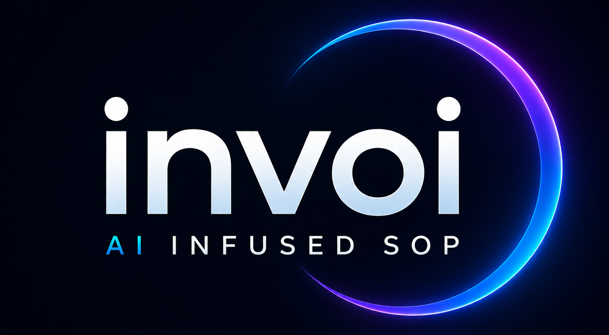

<!doctype html>
<html lang="en">
  <head>
    <meta charset="utf-8" />
    <meta name="viewport" content="width=device-width, initial-scale=1" />
    <title>Netsirv SOP & Document Management Ecosystem</title>
    <style>
      @page {
        size: 8.5in 11in;
        margin: 0;
      }

      :root {
        --bg: #050b16;
        --panel: #07172a;
        --panel-2: #091e35;
        --text: #f4f8ff;
        --muted: #9fb2c7;
        --line: rgba(45, 226, 255, 0.38);
        --cyan: #26e4ff;
        --blue: #3387ff;
        --purple: #a855f7;
        --magenta: #f052d9;
        --green: #13e6a3;
        --yellow: #f7c948;
        --orange: #fb923c;
        --red: #fb7185;
        --shadow: rgba(0, 0, 0, 0.38);
      }

      body.theme-light {
        --bg: #f5f8fc;
        --panel: #ffffff;
        --panel-2: #eef6ff;
        --text: #0d1b2e;
        --muted: #53667d;
        --line: rgba(0, 119, 181, 0.22);
        --cyan: #007a99;
        --blue: #1d4ed8;
        --purple: #7c3aed;
        --magenta: #be185d;
        --green: #047857;
        --yellow: #a16207;
        --orange: #c2410c;
        --red: #be123c;
        --shadow: rgba(15, 23, 42, 0.12);
      }

      * {
        box-sizing: border-box;
      }

      body {
        margin: 0;
        background: var(--bg);
        color: var(--text);
        font-family:
          Inter, ui-sans-serif, system-ui, -apple-system, BlinkMacSystemFont,
          "Segoe UI", sans-serif;
      }

      @media screen {
        body.deck-web {
          --deck-zoom: 1;
          min-height: 100vh;
          padding: 32px 0;
          overflow-x: hidden;
          background:
            radial-gradient(circle at 15% 10%, color-mix(in srgb, var(--cyan) 12%, transparent), transparent 28%),
            radial-gradient(circle at 88% 12%, color-mix(in srgb, var(--purple) 12%, transparent), transparent 28%),
            var(--bg);
        }

        body.deck-web #deck {
          width: 8.5in;
          margin: 0 auto;
          zoom: var(--deck-zoom);
        }

        body.deck-web .slide {
          margin: 0 auto 32px;
          border: 1px solid color-mix(in srgb, var(--line) 85%, transparent);
          border-radius: 18px;
          box-shadow: 0 28px 70px color-mix(in srgb, var(--shadow) 85%, transparent);
          page-break-after: auto;
        }

        body.single-page {
          min-height: 100vh;
          padding: 24px 0;
          display: grid;
          place-items: center;
        }

        body.single-page #deck {
          width: 8.5in;
          margin: 0 auto;
          zoom: var(--deck-zoom);
        }

        body.single-page .slide {
          margin: 0;
        }
      }

      .slide {
        position: relative;
        isolation: isolate;
        width: 8.5in;
        height: 11in;
        padding: 0.5in 0.46in;
        overflow: hidden;
        page-break-after: always;
        background:
          radial-gradient(circle at 78% 50%, rgba(51, 135, 255, 0.18), transparent 31%),
          radial-gradient(circle at 88% 58%, rgba(168, 85, 247, 0.2), transparent 27%),
          linear-gradient(135deg, var(--bg), color-mix(in srgb, var(--bg) 90%, #102a46));
      }

      body.theme-light .slide {
        background:
          radial-gradient(circle at 78% 50%, rgba(38, 228, 255, 0.12), transparent 31%),
          radial-gradient(circle at 88% 58%, rgba(168, 85, 247, 0.11), transparent 27%),
          linear-gradient(135deg, var(--bg), #ffffff);
      }

      .slide::before {
        content: "";
        position: absolute;
        inset: 0;
        z-index: 0;
        pointer-events: none;
        opacity: 0.72;
        background-image:
          linear-gradient(90deg, color-mix(in srgb, var(--cyan) 10%, transparent) 1px, transparent 1px),
          linear-gradient(color-mix(in srgb, var(--cyan) 8%, transparent) 1px, transparent 1px);
        background-size: 48px 48px;
        mask-image: radial-gradient(circle at 84% 54%, black, transparent 58%);
      }

      .slide::after {
        content: "";
        position: absolute;
        right: -0.25in;
        top: 0.6in;
        width: 3.3in;
        height: 9.4in;
        z-index: 0;
        pointer-events: none;
        opacity: 0.42;
        background:
          linear-gradient(135deg, transparent 7%, var(--blue) 7% 8%, transparent 8% 19%, var(--purple) 19% 20%, transparent 20% 31%, var(--cyan) 31% 32%, transparent 32%),
          linear-gradient(45deg, transparent 6%, var(--cyan) 6% 7%, transparent 7% 21%, var(--magenta) 21% 22%, transparent 22% 38%, var(--blue) 38% 39%, transparent 39%);
        filter: drop-shadow(0 0 10px color-mix(in srgb, var(--cyan) 55%, transparent));
        mask-image: radial-gradient(circle at 58% 50%, black, transparent 76%);
      }

      body.theme-light .slide::after {
        opacity: 0.08;
      }

      .slide > * {
        position: relative;
        z-index: 2;
      }

      .brand {
        position: absolute;
        z-index: 3;
        top: 0.28in;
        right: 0.38in;
        color: var(--cyan);
        font-size: 0.13in;
        font-weight: 900;
        letter-spacing: 0.08em;
      }

      .kicker {
        color: var(--cyan);
        font-size: 0.16in;
        font-weight: 900;
        letter-spacing: 0.14em;
        text-transform: uppercase;
      }

      h1 {
        margin: 0.12in 0 0;
        max-width: 7.2in;
        color: var(--text);
        font-size: 0.44in;
        line-height: 1.05;
        letter-spacing: -0.02em;
      }

      h2 {
        margin: 0;
        color: var(--text);
        font-size: 0.3in;
        line-height: 1.08;
        letter-spacing: -0.015em;
      }

      h3 {
        margin: 0;
        color: var(--text);
        font-size: 0.17in;
        line-height: 1.2;
      }

      p {
        margin: 0;
        color: var(--muted);
        font-size: 0.13in;
        line-height: 1.45;
      }

      .subtitle {
        margin-top: 0.28in;
        max-width: 7.1in;
        color: color-mix(in srgb, var(--text) 84%, var(--muted));
        font-size: 0.18in;
      }

      .logo {
        display: block;
        width: 3.1in;
        height: auto;
        filter: drop-shadow(0 0 0.18in color-mix(in srgb, var(--cyan) 24%, transparent));
      }

      .grid {
        display: grid;
        gap: 0.22in;
      }

      .grid-2 {
        grid-template-columns: repeat(2, minmax(0, 1fr));
      }

      .grid-3 {
        grid-template-columns: repeat(2, minmax(0, 1fr));
      }

      .grid-4 {
        grid-template-columns: repeat(2, minmax(0, 1fr));
      }

      .grid-5,
      .grid-6 {
        grid-template-columns: repeat(2, minmax(0, 1fr)) !important;
      }

      .panel,
      .metric,
      .card {
        position: relative;
        background: transparent;
      }

      .panel {
        padding: 0.06in 0;
      }

      .card {
        padding: 0.04in 0;
      }

      .metric {
        padding: 0.05in 0;
      }

      .panel.accent-cyan {
        color: inherit;
      }

      .panel.accent-purple {
        color: inherit;
      }

      .row {
        display: flex;
        align-items: center;
        gap: 0.14in;
      }

      .stack {
        display: flex;
        flex-direction: column;
        gap: 0.24in;
      }

      .small {
        font-size: 0.125in;
      }

      .caption {
        color: var(--cyan);
        font-size: 0.15in;
        font-weight: 800;
        text-align: center;
      }

      .footer {
        position: absolute;
        z-index: 3;
        left: 0.58in;
        bottom: 0.28in;
        color: var(--cyan);
        font-size: 0.115in;
        font-weight: 800;
        letter-spacing: 0.04em;
        text-transform: uppercase;
      }

      .page {
        position: absolute;
        z-index: 3;
        right: 0.45in;
        bottom: 0.26in;
        color: color-mix(in srgb, var(--text) 92%, var(--muted));
        font-size: 0.24in;
      }

      .icon {
        width: 0.44in;
        height: 0.44in;
        flex: 0 0 auto;
      }

      .icon.small-icon {
        width: 0.28in;
        height: 0.28in;
      }

      .pill-row {
        display: flex;
        flex-wrap: wrap;
        gap: 0.12in;
        margin-top: 0.46in;
      }

      .pill {
        display: inline-flex;
        align-items: center;
        gap: 0.08in;
        min-height: 0.38in;
        padding: 0.05in 0;
        color: var(--cyan);
        font-size: 0.12in;
        font-weight: 900;
        letter-spacing: 0.04em;
        text-transform: uppercase;
      }

      .pill.purple {
        color: var(--purple);
      }

      .pill.yellow {
        color: var(--yellow);
      }

      .pill.green {
        color: var(--green);
      }

      .callout {
        margin-top: 0.28in;
        padding: 0.03in 0 0.03in 0.18in;
        border-left: 0.035in solid var(--cyan);
        color: var(--cyan);
        font-size: 0.16in;
        font-weight: 850;
        line-height: 1.35;
        text-align: left;
      }

      .executive-note {
        margin-top: 0.2in;
        max-width: 6.7in;
        color: color-mix(in srgb, var(--text) 90%, var(--muted));
        font-size: 0.155in;
        line-height: 1.48;
      }

      .section-rule {
        width: 0.72in;
        height: 0.03in;
        margin: 0.18in 0 0;
        background: linear-gradient(90deg, var(--cyan), var(--purple));
        border-radius: 999px;
      }

      .brief-grid {
        display: grid;
        grid-template-columns: repeat(2, minmax(0, 1fr));
        gap: 0.24in 0.36in;
        margin-top: 0.3in;
      }

      .brief-item {
        padding-top: 0.16in;
        border-top: 1px solid color-mix(in srgb, var(--line) 70%, transparent);
      }

      .brief-item h3 {
        color: var(--text);
      }

      .brief-item p {
        margin-top: 0.05in;
      }

      .outcome-grid {
        display: grid;
        grid-template-columns: repeat(2, minmax(0, 1fr));
        gap: 0.28in;
        margin-top: 0.36in;
      }

      .outcome {
        min-height: 1.42in;
        padding: 0.16in 0 0;
        border-top: 1px solid color-mix(in srgb, var(--line) 70%, transparent);
        text-align: center;
      }

      .outcome .big-number {
        margin-top: 0.08in;
      }

      .outcome .icon {
        margin: 0 auto;
      }

      .mini-map {
        display: grid;
        grid-template-columns: repeat(5, minmax(0, 1fr));
        gap: 0.14in;
        margin-top: 0.22in;
        align-items: stretch;
      }

      .mini-map .card {
        min-height: 0.7in;
        border-top: 1px solid color-mix(in srgb, var(--line) 70%, transparent);
      }

      .relation-stage {
        display: grid;
        grid-template-columns: 1.7in minmax(0, 1fr);
        gap: 0.34in;
        align-items: center;
        margin-top: 0.26in;
      }

      .relation-hub {
        width: 1.5in;
        height: 1.5in;
        border: 0.04in solid var(--cyan);
        border-radius: 999px;
        background: #f4ebff;
        display: grid;
        place-items: center;
        text-align: center;
        color: var(--text);
        font-weight: 950;
        line-height: 1.15;
      }

      body:not(.theme-light) .relation-hub {
        background: #07172a;
      }

      .relationship-grid {
        display: grid;
        grid-template-columns: repeat(2, minmax(0, 1fr));
        gap: 0.18in 0.26in;
      }

      .relationship-item {
        padding-top: 0.12in;
        border-top: 1px solid color-mix(in srgb, var(--line) 72%, transparent);
      }

      .relationship-item h3 {
        color: var(--cyan);
        font-size: 0.16in;
      }

      .relationship-item p {
        margin-top: 0.04in;
      }

      .object-grid {
        display: grid;
        grid-template-columns: repeat(2, minmax(0, 1fr));
        gap: 0.22in 0.34in;
        margin-top: 0.32in;
      }

      .object-tile {
        min-height: 1.08in;
        display: grid;
        align-content: center;
        justify-items: center;
        text-align: center;
        padding: 0.1in 0.06in 0.02in;
        border-top: 1px solid color-mix(in srgb, var(--line) 70%, transparent);
      }

      .object-tile .icon {
        margin-bottom: 0.12in;
      }

      .object-tile p {
        margin-top: 0.05in;
        max-width: 2.45in;
      }

      .object-tile.span-2 {
        grid-column: 1 / -1;
        justify-self: center;
        width: min(100%, 3.4in);
      }

      .evidence-chain {
        display: grid;
        grid-template-columns: repeat(2, minmax(0, 1fr));
        gap: 0.16in 0.34in;
        margin-top: 0.32in;
      }

      .evidence-step {
        display: grid;
        grid-template-columns: 0.54in minmax(0, 1fr);
        gap: 0.16in;
        align-items: center;
        min-height: 0.72in;
        padding-bottom: 0.12in;
        border-bottom: 1px solid color-mix(in srgb, var(--line) 60%, transparent);
      }

      .evidence-step h3 {
        color: currentColor;
      }

      .list {
        margin: 0.13in 0 0;
        padding: 0;
        display: grid;
        gap: 0.1in;
        list-style: none;
      }

      .list li {
        position: relative;
        padding-left: 0.22in;
        color: color-mix(in srgb, var(--text) 82%, var(--muted));
        font-size: 0.14in;
        line-height: 1.35;
      }

      .list li::before {
        content: "";
        position: absolute;
        left: 0;
        top: 0.08in;
        width: 0.08in;
        height: 0.08in;
        border-radius: 999px;
        background: var(--cyan);
        box-shadow: none;
      }

      .num-card {
        display: grid;
        grid-template-columns: 0.58in minmax(0, 1fr);
        gap: 0.2in;
        align-items: center;
        background: transparent !important;
        box-shadow: none !important;
      }

      .num {
        width: 0.5in;
        height: 0.5in;
        border: 2px solid var(--cyan);
        border-radius: 999px;
        color: var(--cyan);
        display: grid;
        place-items: center;
        font-size: 0.23in;
        font-weight: 950;
        background: #e7fbff !important;
        box-shadow: none !important;
        text-shadow: none;
      }

      .num-card:nth-child(2n) .num {
        color: var(--blue);
        border-color: var(--blue);
        background: #edf3ff !important;
      }

      .num-card:nth-child(3n) .num {
        color: var(--purple);
        border-color: var(--purple);
        background: #f4ebff !important;
      }

      .num-card:nth-child(5n) .num {
        color: var(--green);
        border-color: var(--green);
        background: #e8fff5 !important;
      }

      body:not(.theme-light) .num {
        background: #07172a !important;
      }

      .flow {
        display: flex;
        align-items: center;
        gap: 0.16in;
        flex-wrap: wrap;
      }

      .arrow {
        color: var(--cyan);
        font-size: 0.28in;
        font-weight: 900;
      }

      .center {
        display: grid;
        place-items: center;
      }

      .orb {
        width: 2.05in;
        height: 2.05in;
        border: 0.04in solid var(--cyan);
        border-radius: 999px;
        background: #f4ebff;
        box-shadow: none;
        color: var(--text);
        display: grid;
        place-items: center;
        text-align: center;
        font-size: 0.16in;
        font-weight: 900;
        line-height: 1.2;
      }

      body:not(.theme-light) .orb {
        background: #07172a;
      }

      .table {
        width: 100%;
        border-collapse: collapse;
        overflow: hidden;
        color: var(--text);
      }

      .table th,
      .table td {
        padding: 0.09in 0;
        border-bottom: 1px solid color-mix(in srgb, var(--line) 65%, transparent);
        font-size: 0.12in;
        text-align: left;
      }

      .table th {
        color: var(--cyan);
        font-weight: 900;
      }

      .status {
        color: var(--green);
        font-weight: 900;
      }

      .warn {
        color: var(--orange);
        font-weight: 900;
      }

      .big-number {
        color: var(--cyan);
        font-size: 0.33in;
        font-weight: 950;
        line-height: 1;
      }

      .chart-bars {
        height: 1.15in;
        display: flex;
        align-items: end;
        justify-content: center;
        gap: 0.08in;
        padding-top: 0.2in;
      }

      .bar {
        width: 0.14in;
        border-radius: 999px 999px 0 0;
        background: linear-gradient(180deg, var(--cyan), var(--blue));
      }

      .spark {
        height: 1.15in;
        border-bottom: 1px solid var(--line);
        background:
          linear-gradient(140deg, transparent 0 12%, var(--purple) 12% 14%, transparent 14% 29%, var(--cyan) 29% 31%, transparent 31% 48%, var(--magenta) 48% 50%, transparent 50% 68%, var(--green) 68% 70%, transparent 70%),
          linear-gradient(180deg, transparent 80%, color-mix(in srgb, var(--line) 50%, transparent));
      }

      .timeline {
        display: grid;
        grid-template-columns: repeat(2, 1fr);
        gap: 0.24in;
        align-items: stretch;
      }

      .timeline .card {
        min-height: 1.55in;
      }

      .road-dot {
        width: 0.62in;
        height: 0.62in;
        border: 2px solid currentColor;
        border-radius: 999px;
        display: grid;
        place-items: center;
        margin-bottom: 0.12in;
      }

      .closing-logo {
        display: block;
        margin-top: 0.34in;
        padding: 0;
        width: 4.25in;
        height: auto;
        filter: drop-shadow(0 0 0.22in color-mix(in srgb, var(--cyan) 24%, transparent));
      }
    </style>
  </head>
  <body>
    <div id="deck"></div>

    <script>
      const params = new URLSearchParams(location.search);
      if (params.get("theme") === "light") document.body.classList.add("theme-light");
      if (params.get("view") === "web") document.body.classList.add("deck-web");
      if (params.has("page")) document.body.classList.add("single-page");

      function setDeckScale() {
        if (!document.body.classList.contains("deck-web") && !document.body.classList.contains("single-page")) return;
        const slideWidth = 816;
        const available = Math.max(320, window.innerWidth - 48);
        document.body.style.setProperty("--deck-zoom", String(Math.min(1, available / slideWidth)));
      }

      window.addEventListener("resize", setDeckScale);

      const icons = {
        document: `<svg class="icon" viewBox="0 0 64 64" fill="none" stroke="currentColor" stroke-width="3"><path d="M18 6h21l13 13v39H18z"/><path d="M39 6v15h13"/><path d="M25 32h22M25 42h18"/></svg>`,
        folder: `<svg class="icon" viewBox="0 0 64 64" fill="none" stroke="currentColor" stroke-width="3"><path d="M7 18h18l6 7h26v29H7z"/><path d="M7 25h50"/></svg>`,
        brain: `<svg class="icon" viewBox="0 0 64 64" fill="none" stroke="currentColor" stroke-width="3"><path d="M24 12a9 9 0 0 0-9 9v2a9 9 0 0 0 0 18v2a9 9 0 0 0 9 9"/><path d="M40 12a9 9 0 0 1 9 9v2a9 9 0 0 1 0 18v2a9 9 0 0 1-9 9"/><path d="M24 12v40M40 12v40M24 25h16M24 39h16"/></svg>`,
        phone: `<svg class="icon" viewBox="0 0 64 64" fill="none" stroke="currentColor" stroke-width="3"><rect x="19" y="6" width="26" height="52" rx="5"/><path d="M28 50h8"/></svg>`,
        graph: `<svg class="icon" viewBox="0 0 64 64" fill="none" stroke="currentColor" stroke-width="3"><circle cx="16" cy="32" r="6"/><circle cx="32" cy="16" r="6"/><circle cx="48" cy="34" r="6"/><circle cx="31" cy="50" r="6"/><path d="M21 28l7-8M37 19l7 10M43 38l-8 8M21 36l6 10"/></svg>`,
        shield: `<svg class="icon" viewBox="0 0 64 64" fill="none" stroke="currentColor" stroke-width="3"><path d="M32 6l22 8v16c0 15-9 24-22 29C19 54 10 45 10 30V14z"/><path d="M22 32l7 7 14-16"/></svg>`,
        invoice: `<svg class="icon" viewBox="0 0 64 64" fill="none" stroke="currentColor" stroke-width="3"><path d="M18 7h28v50l-7-4-7 4-7-4-7 4z"/><path d="M25 21h14M25 31h14M25 41h9"/></svg>`,
        audit: `<svg class="icon" viewBox="0 0 64 64" fill="none" stroke="currentColor" stroke-width="3"><path d="M17 10h30v44H17z"/><path d="M24 23l5 5 11-11M24 39l5 5 11-11"/></svg>`,
        user: `<svg class="icon" viewBox="0 0 64 64" fill="none" stroke="currentColor" stroke-width="3"><circle cx="32" cy="22" r="10"/><path d="M14 56c4-12 32-12 36 0"/></svg>`,
        bolt: `<svg class="icon" viewBox="0 0 64 64" fill="none" stroke="currentColor" stroke-width="3"><path d="M37 4L15 36h16l-4 24 22-33H33z"/></svg>`,
        target: `<svg class="icon" viewBox="0 0 64 64" fill="none" stroke="currentColor" stroke-width="3"><circle cx="32" cy="32" r="24"/><circle cx="32" cy="32" r="13"/><circle cx="32" cy="32" r="4"/><path d="M45 19l10-10"/></svg>`,
        building: `<svg class="icon" viewBox="0 0 64 64" fill="none" stroke="currentColor" stroke-width="3"><path d="M12 58V12h25v46M37 25h15v33"/><path d="M20 22h8M20 34h8M20 46h8M44 35h4M44 46h4"/></svg>`,
      };

      const slideNumbers = [1,2,3,5,6,7,8,9,10,12,13,14,15,17,18,19,20,21,22,24];

      function icon(name, color = "var(--cyan)") {
        return `<span style="color:${color}">${icons[name] || icons.document}</span>`;
      }

      function frame(content, idx, section = "client story") {
        return `<section class="slide">
          <div class="brand">NETSIRV</div>
          ${content}
          <div class="footer">${section}</div>
          <div class="page">${slideNumbers[idx]}</div>
        </section>`;
      }

      const slides = [
        frame(`
          <div style="margin-top:.45in" class="kicker">Expanded Executive Narrative</div>
          <h1>Netsirv SOP &<br/>Document Management<br/>Ecosystem</h1>
          <p class="subtitle">A client decision deck for turning procedures, documents, training, mobile capture, AI and accounting into one connected operating layer.</p>
          <div class="pill-row">
            <div class="pill purple">${icon("document")}SOP-first</div>
            <div class="pill">${icon("brain")}AI-assisted</div>
            <div class="pill yellow">${icon("audit")}Audit-ready</div>
            <div class="pill green">${icon("invoice")}Accounting aware</div>
          </div>
          <div class="callout" style="max-width:7.4in">The front door is document management.<br/>The strategic outcome is operational control.</div>`, 0, "expanded narrative"),

        frame(`<h2>The narrative shift</h2><p class="subtitle" style="margin-top:.08in">From passive document storage to an active operating system for work.</p>
          <div class="grid grid-2" style="margin-top:.34in">
            <div class="panel accent-cyan"><h3>Old Model</h3><p class="kicker" style="margin-top:.08in">Document repository</p><div style="margin:.18in 0;color:var(--cyan)">${icon("folder")}</div><p>Files are uploaded, named, searched and sometimes forgotten. The system can store the SOP, but it cannot prove that the work was governed.</p><p style="margin-top:.2in;color:var(--cyan);font-weight:800">Common outcome: documents exist, but operations still rely on memory, email, manual entry and tribal knowledge.</p></div>
            <div class="panel accent-purple"><h3>Netsirv Model</h3><p class="kicker" style="margin-top:.08in">Operational intelligence layer</p><div style="margin:.18in 0;color:var(--purple)">${icon("brain")}</div><p>The SOP is connected to training, mobile actions, evidence, approvals, transactions and financial output. The document is no longer passive; it drives the process.</p><p style="margin-top:.2in;color:var(--cyan);font-weight:800">Better outcome: the organization can trace what happened, why it happened, who approved it and what evidence supports it.</p></div>
          </div>`, 1),

        frame(`<h2>Why this matters now</h2><div class="section-rule"></div><p class="subtitle" style="margin-top:.16in">Document chaos is not an IT inconvenience. It becomes an operations, compliance and finance problem.</p>
          <p class="executive-note">The risk is not that a file is hard to find. The risk is that the business cannot prove which procedure governed the work, which person acted, what evidence was captured, and how the event reached finance.</p>
          <div class="grid grid-2" style="margin-top:.32in">
            ${["SOP drift|Employees may use outdated versions or informal workarounds.","Evidence gaps|Invoices, receipts, photos and BOLs are separated from the work they support.","Manual re-keying|Financial data is exported, typed and approved as disconnected documents.","Audit fragility|Hard to prove procedure, training, field execution and source evidence in one chain."].map((x,i)=>{const [a,b]=x.split("|"); return `<div class="card num-card"><div class="num">${i+1}</div><div><h3>${a}</h3><p>${b}</p></div></div>`}).join("")}
          </div>
          <div class="callout">The cost is not only lost time. It is weak control over how work is performed, documented, approved and reported.</div>`, 2),

        frame(`<h2>Why traditional document management falls short</h2><div class="section-rule"></div><p class="subtitle" style="margin-top:.16in">It stores content, but it rarely controls the work that content is supposed to govern.</p>
          <div class="grid grid-2" style="margin-top:.32in">
            <div class="panel"><h3 style="color:var(--cyan)">Traditional DMS</h3><p>Search results</p><ul class="list"><li>SOP_Receiving_Final_v3.pdf</li><li>SOP_Receiving_Final_REVISED.pdf</li><li>Receiving_SOP_2024.docx</li><li>BOL Scan 8921.pdf</li><li>Invoice HVAC photo.jpg</li></ul></div>
            <div class="panel accent-cyan"><h3 style="color:var(--cyan)">Netsirv Context Graph</h3><p>SOP. Cross-document reasoning.</p><table class="table"><tr><td>Active SOP</td><td>v2.1</td></tr><tr><td>Trained Users</td><td>42</td></tr><tr><td>BOL Evidence</td><td>18</td></tr><tr><td>Open Exceptions</td><td>3</td></tr><tr><td>GL Impact</td><td>$12.4k</td></tr></table></div>
          </div>
          <div class="brief-grid">
            <div class="brief-item"><h3>Search finds files</h3><p>It does not explain whether a file is current, governing, related to a workflow, or backed by source evidence.</p></div>
            <div class="brief-item"><h3>Context governs work</h3><p>Relationships make the record operational: SOP, role, approval, vendor, asset, transaction and audit trail.</p></div>
          </div>
          <div class="callout">The difference is relationship intelligence: documents are linked to SOPs, users, training, transactions and audit evidence.</div>`, 3, "story"),

        frame(`<h2>The Netsirv ecosystem model</h2><div class="section-rule"></div><p class="subtitle" style="margin-top:.16in">A reusable operating layer: SOPs guide work, documents prove work, and connected data drives outcomes.</p>
          <div class="center" style="margin-top:.26in"><div class="orb" style="width:1.72in;height:1.72in">SOP + DOCUMENT<br/>CONTROL CENTER</div></div>
          <div class="object-grid" style="margin-top:.3in">
            ${[
              ["Academy","Training and role readiness","user","var(--purple)"],
              ["Mobile","Field capture and evidence","phone","var(--cyan)"],
              ["AI document","Repository, search and extraction","brain","var(--purple)"],
              ["Procurement","Workflow and approvals","audit","var(--yellow)"],
              ["Vendor + contracts","Commercial context","document","var(--cyan)"],
              ["Accounting","Financial output","invoice","var(--green)"]
            ].map(([a,b,ic,color])=>`<div class="object-tile">${icon(ic,color)}<h3>${a}</h3><p>${b}</p></div>`).join("")}
          </div>
          <div class="brief-grid" style="margin-top:.26in">
            <div class="brief-item"><h3>Operating control</h3><p>Procedures, permissions and evidence travel together instead of living in disconnected systems.</p></div>
            <div class="brief-item"><h3>Executive visibility</h3><p>Leadership can see process compliance, financial impact and exception posture from one connected model.</p></div>
          </div>
          <div class="callout">Each capability is useful independently; the executive value appears when they operate as one controlled system.</div>`, 4, "ecosystem"),

        frame(`<h2>Universal document intelligence</h2><p class="subtitle" style="margin-top:.08in">One intake pipeline handles SOPs, invoices, contracts, BOLs, receipts, photos and handwritten documents.</p>
          <div class="grid grid-2" style="margin-top:.28in;grid-template-columns:1.05fr .95fr">
            <div class="panel"><div class="object-grid" style="margin-top:0;gap:.16in .2in">${["Capture|Scanning + Original","Classify|Document Type","Extract|Key Data","Score|Confidence","Review|Human-in-the-Loop","Route|To Workflow"].map((x,i)=>{const [a,b]=x.split("|"); return `<div class="object-tile" style="min-height:.92in">${icon(["phone","folder","document","shield","user","bolt"][i])}<h3>${a}</h3><p>${b}</p></div>`}).join("")}</div></div>
            <div class="panel accent-purple"><h3>AI Extraction Review</h3><table class="table"><tr><th>Invoice</th><th>Service Invoice</th></tr><tr><td>Vendor</td><td>ABC HVAC</td></tr><tr><td>Date</td><td>08/16/26</td></tr><tr><td>Work</td><td>RTU repair</td></tr><tr><td>Materials</td><td>$140.20</td></tr><tr><td>Total</td><td>$725.00</td></tr></table></div>
          </div>
          <div class="object-grid" style="margin-top:.25in">${["AI assists|It classifies documents, flags exceptions and extracts data.","People control|Operators verify data before it becomes trusted.","Evidence remains|Original files, metadata, approvals and relationships are retained."].map((x,i)=>{const[a,b]=x.split("|");return `<div class="object-tile ${i === 2 ? "span-2" : ""}"><div class="num">${i+1}</div><h3 style="margin-top:.1in">${a}</h3><p>${b}</p></div>`}).join("")}</div>`, 5, "document intelligence"),

        frame(`<h2>Mobile turns field work into governed records</h2><div class="section-rule"></div><p class="subtitle" style="margin-top:.16in">The employee experience stays simple: open task, see SOP, scan evidence, verify and submit.</p>
          <div class="grid grid-2" style="margin-top:.34in">
            ${["Procurement|Start controlled request","View SOP|Current procedure in hand","Scan invoice|Capture original evidence","Scan product|Confirm item and shipment","Receive shipment|Record operational event","Capture document|Attach proof to workflow"].map((x,i)=>{const[a,b]=x.split("|");return `<div class="card num-card"><div class="num">${i+1}</div><div><h3>${a}</h3><p>${b}</p></div></div>`}).join("")}
          </div>
          <div class="brief-grid" style="margin-top:.3in">
            <div class="brief-item"><h3>Field simplicity</h3><p>Operators follow a guided sequence instead of interpreting policy from memory.</p></div>
            <div class="brief-item"><h3>Back-office control</h3><p>Every scan, classification and exception enters the business record with context.</p></div>
          </div>
          <div class="callout" style="max-width:8.5in;margin-left:auto;margin-right:auto">SOP, invoice, item, truck, service and GL classification are linked.</div>`, 6, "user experience"),

        frame(`<h2>SOP + Academy creates a governance differentiator</h2><div class="section-rule"></div><p class="subtitle" style="margin-top:.16in">Access can be based on demonstrated competency, not just a permissions checkbox.</p>
          <div class="grid grid-2" style="margin-top:.32in;align-items:start">
            <div class="panel">
              <div class="grid grid-2">${["SOP met","Training","Assessment","Access"].map((x,i)=>`<div class="card num-card"><div class="num">${i+1}</div><div><h3>${x}</h3><p>${["Procedure accepted","Role readiness started","Competency verified","Workflow permission granted"][i]}</p></div></div>`).join("")}</div>
              <table class="table" style="margin-top:.25in"><tr><td>Scheduling</td><td class="status">ACTIVE</td></tr><tr><td>Orders</td><td class="status">ACTIVE</td></tr><tr><td>Procurement</td><td class="status">ACTIVE</td></tr><tr><td>HazMat</td><td class="warn">TRAINING</td></tr></table>
            </div>
            <div class="panel accent-cyan"><h3>Governance story for executives</h3><ul class="list"><li>The same SOP that governs the work can determine who is allowed to perform a business module.</li><li>The system can prove the user was trained before the workflow became available.</li><li>This creates a clear control narrative for operations, HR, compliance and audit.</li></ul></div>
          </div>`, 7, "user experience"),

        frame(`<h2>Documents become relationship-aware business objects</h2><div class="section-rule"></div><p class="subtitle" style="margin-top:.16in">The document becomes more valuable when it carries business context with it.</p>
          <div class="grid grid-2" style="margin-top:.28in;grid-template-columns:1.15fr .85fr;align-items:start">
            <div class="panel"><h3>Vendor Service Invoice</h3><table class="table"><tr><td>Vendor</td><td>ABC HVAC</td></tr><tr><td>Location</td><td>Main Office</td></tr><tr><td>Asset</td><td>RTU-006</td></tr><tr><td>SOP</td><td>Maintenance SOP</td></tr><tr><td>Purchase</td><td>Service expense</td></tr><tr><td>Contract</td><td>2026 MSA</td></tr></table></div>
            <div class="panel accent-cyan"><h3>What changes</h3><ul class="list"><li>Every file has business identity.</li><li>Every approval retains source context.</li><li>Every finance event can be traced back to work.</li></ul></div>
          </div>
          <div class="relation-stage">
            <div class="relation-hub">${icon("document")}<span>Document</span></div>
            <div class="relationship-grid">
              ${[
                ["Vendor","ABC HVAC and contract terms"],
                ["Asset","RTU-006 service history"],
                ["SOP","Maintenance procedure v2.1"],
                ["GL","Expense category and location"],
                ["Approval","Manager decision and timestamp"],
                ["Evidence","Original file and metadata"]
              ].map(([a,b])=>`<div class="relationship-item"><h3>${a}</h3><p>${b}</p></div>`).join("")}
            </div>
          </div>
          <div class="callout">This is the difference between storing a file and creating an operational knowledge graph.</div>`, 8, "document intelligence"),

        frame(`<h2>Audit & evidence chain</h2><div class="section-rule"></div><p class="subtitle" style="margin-top:.16in">Every meaningful event can be reconstructed from governing SOP through financial output.</p>
          <div class="evidence-chain">${[
            ["SOP","Current procedure governs the action","var(--blue)","document"],
            ["Training","User readiness is verified","var(--purple)","user"],
            ["User","Actor and role are retained","var(--cyan)","user"],
            ["Device","Source capture is known","var(--blue)","phone"],
            ["Document","Original record is preserved","var(--cyan)","folder"],
            ["Purchase","Commercial event is classified","var(--yellow)","invoice"],
            ["Product","Item, asset or service is linked","var(--orange)","folder"],
            ["Approval","Decision is recorded","var(--yellow)","shield"],
            ["GL","Financial impact is traceable","var(--magenta)","invoice"]
          ].map(([a,b,color,ic])=>`<div class="evidence-step" style="color:${color}">${icon(ic,"currentColor")}<div><h3>${a}</h3><p>${b}</p></div></div>`).join("")}</div>
          <div class="callout">Evidence is captured at the source — not bolted on after the fact.</div>
          <div class="brief-grid" style="margin-top:.25in">${["Who|User role, training, approval","What|SOP, service, document, transaction","Where|Location, device, department","Proof|Original document, AI score, correction, audit log"].map((x,i)=>{const[a,b]=x.split("|");return `<div class="brief-item"><h3 style="color:${["var(--blue)","var(--purple)","var(--yellow)","var(--green)"][i]}">${a}</h3><p>${b}</p></div>`}).join("")}</div>`, 9, "document intelligence"),

        frame(`<h2>Accounting is not an afterthought</h2><div class="section-rule"></div><p class="subtitle" style="margin-top:.16in">Operational events flow to accounting with full context, not as orphan entries.</p>
          <div class="grid grid-2" style="margin-top:.32in">
            <div class="panel"><h3>Operational Event</h3><p style="margin-top:.14in;color:var(--text)">Service invoice approved<br/>ABC HVAC<br/>$725</p><ul class="list"><li>SOP followed</li><li>User trained</li><li>Evidence captured</li><li>Approval obtained</li></ul></div>
            <div class="panel accent-cyan"><h3>Accounting Impact</h3><table class="table"><tr><td>GL Account</td><td>6300</td></tr><tr><td>Service Expense</td><td>$725</td></tr><tr><td>Amount</td><td>$725</td></tr><tr><td>Location</td><td>Main Office</td></tr><tr><td>Asset</td><td>RTU-006</td></tr><tr><td>Vendor</td><td>ABC HVAC</td></tr></table></div>
          </div>
          <div class="brief-grid" style="margin-top:.3in">
            <div class="brief-item"><h3>Finance sees why</h3><p>The GL event is supported by source record, SOP, approval and vendor context.</p></div>
            <div class="brief-item"><h3>Audit follows one chain</h3><p>Reviewers can reconstruct the event without chasing files across systems.</p></div>
          </div>
          <div class="callout">Clean data in. Clean books out. Audit confidence all the way through.</div>`, 10, "financial integrity"),

        frame(`<h2>Exception management keeps work moving</h2><div class="section-rule"></div><p class="subtitle" style="margin-top:.16in">Exceptions are captured, routed, resolved and retained.</p>
          <div class="grid grid-2" style="margin-top:.32in">
            <div class="stack">${["Price mismatch|Invoice + Contract","Item not found|Not in master data","Damaged goods|Container exception","Policy exception|Requires approval"].map((x,i)=>{const[a,b]=x.split("|");return `<div class="card row" style="border-color:${["var(--magenta)","var(--blue)","var(--orange)","var(--green)"][i]}">${icon(["invoice","folder","shield","audit"][i],["var(--magenta)","var(--blue)","var(--orange)","var(--green)"][i])}<div><h3>${a}</h3><p>${b}</p></div></div>`}).join("")}</div>
            <div class="panel"><h3>Exception Workflow</h3><ul class="list"><li>Route to right approver</li><li>Decision recorded</li><li>Continue or adjust</li><li>Evidence retained</li></ul></div>
          </div>
          <div class="brief-grid" style="margin-top:.3in">
            <div class="brief-item"><h3>Operational continuity</h3><p>Work can continue with transparent decisions instead of informal workarounds.</p></div>
            <div class="brief-item"><h3>Control preservation</h3><p>The reason, approver and supporting evidence remain attached to the record.</p></div>
          </div>
          <div class="callout">Exceptions are visible, not hidden.</div>`, 11, "financial integrity"),

        frame(`<h2>Dashboards that drive behavior</h2><div class="section-rule"></div><p class="subtitle" style="margin-top:.16in">Real-time visibility across operations, compliance and finance.</p>
          <div class="brief-grid">
            <div class="brief-item"><h3>Operations</h3><p>Tasks completed, on-time performance, exceptions and backlog.</p><div class="chart-bars">${[35,48,28,66,54,82].map(h=>`<span class="bar" style="height:${h}%"></span>`).join("")}</div></div>
            <div class="brief-item"><h3>Compliance</h3><p>SOP adherence, training status, audit readiness and evidence completeness.</p><div class="center" style="margin-top:.14in;min-height:1.3in;justify-items:center"><div class="orb" style="width:1.12in;height:1.12in;font-size:.22in">92%</div></div></div>
            <div class="brief-item"><h3>Finance</h3><p>Spend by category, GL impact, vendor spend and cost savings.</p><table class="table" style="margin-top:.12in"><tr><td>GL impact</td><td>$12.4k</td></tr><tr><td>Vendor spend</td><td>Tracked</td></tr><tr><td>Cost savings</td><td>Measured</td></tr></table></div>
            <div class="brief-item"><h3>Executive use</h3><p>Leadership gets one view of whether the operating model is performing, controlled and improving.</p></div>
          </div>
          <div class="callout">Metrics drive improvements when the data is connected and trusted.</div>`, 12, "financial return"),

        frame(`<h2>Platform architecture at a glance</h2><div class="section-rule"></div><p class="subtitle" style="margin-top:.16in">Secure, scalable and built for integration.</p>
          <div class="object-grid">
            ${["Web Portal|Executive and operational command surface","Mobile Apps|Field evidence capture and workflow execution","API Gateway|Controlled connection to enterprise systems","AI/ML Services|Classification, extraction and confidence scoring","Workflow Engine|Approvals, routing and exception handling","Integration Layer|Accounting, HR, procurement and data platforms"].map((x,i)=>{const[a,b]=x.split("|");return `<div class="object-tile">${icon(["building","phone","bolt","brain","graph","shield"][i])}<h3>${a}</h3><p>${b}</p></div>`}).join("")}
          </div>
          <div class="mini-map">${["Metadata","Relationships","Audit","Security","Transactions"].map((x)=>`<div class="card center"><p style="color:var(--cyan);font-weight:900">${x}</p></div>`).join("")}</div>
          <div class="callout">Built for government, enterprise and highly regulated industries.</div>`, 13, "platform"),

        frame(`<h2>Integration without disruption</h2><div class="section-rule"></div><p class="subtitle" style="margin-top:.16in">Connects with the systems you have today.</p>
          <div class="grid grid-3" style="margin-top:.36in">
            <div class="panel"><h3>Existing Systems</h3><ul class="list"><li>ERP / Accounting</li><li>Purchasing / P2P</li><li>HR / LMS</li><li>Asset Management</li><li>Custom Systems</li></ul></div>
            <div class="center"><div class="orb" style="width:1.62in;height:1.62in">NETSIRV<br/>Integration<br/>Layer</div></div>
            <div class="panel"><h3>APIs</h3><ul class="list"><li>Webhooks</li><li>SFTP / File</li><li>Standard connectors</li><li>Secure by design</li></ul></div>
          </div>
          <div class="brief-grid" style="margin-top:.32in">
            <div class="brief-item"><h3>Adoption advantage</h3><p>Teams do not have to abandon core systems to gain operational control.</p></div>
            <div class="brief-item"><h3>Scale advantage</h3><p>The same integration pattern can expand process by process.</p></div>
          </div>
          <div class="callout">Open standards. Secure connections. Real operational value.</div>`, 14, "platform"),

        frame(`<h2>Implementation roadmap</h2><p class="subtitle" style="margin-top:.08in">A phased approach that delivers value early and scales confidently.</p>
          <div class="object-grid" style="margin-top:.38in">${[
            ["Phase 1","Foundation","SOP intake, OCR setup, core workflow","var(--cyan)","document"],
            ["Phase 2","Mobile & AI","Mobile capture, AI extraction, catalog","var(--purple)","phone"],
            ["Phase 3","Accounting","Integrations, financial workflows","var(--green)","invoice"],
            ["Phase 4","Optimization","Dashboards, exceptions, advanced rules","var(--yellow)","graph"],
            ["Phase 5","Scale","Additional sites, advanced analytics","var(--magenta)","shield"]
          ].map(([a,b,c,color,ic])=>`<div class="object-tile">${icon(ic,color)}<h3>${a}</h3><p style="color:${color};font-weight:900">${b}</p><p>${c}</p></div>`).join("")}</div>
          <div class="callout">Each phase is useful on day one and builds toward a fully connected operational platform.</div>`, 15, "roadmap"),

        frame(`<h2>Pilot program blueprint</h2><p class="subtitle" style="margin-top:.08in">Small scope. Clear outcomes. Low risk.</p>
          <div class="grid grid-2" style="margin-top:.34in">
            <div class="panel"><table class="table"><tr><td>Scope</td><td>One process, one location</td></tr><tr><td>Duration</td><td>8 - 12 weeks</td></tr><tr><td>Participants</td><td>10 - 12 users</td></tr><tr><td>Deliverables</td><td>Workflow, data, reporting</td></tr><tr><td>Success Criteria</td><td>Adoption, accuracy, time savings</td></tr></table></div>
            <div class="panel accent-cyan"><h3>Pilot Outcomes</h3><ul class="list"><li>Validated process</li><li>Trained users</li><li>Connected data</li><li>Measurable results</li><li>Plan to scale</li></ul><div style="margin-top:.25in;color:var(--purple)">${icon("target","var(--purple)")}</div></div>
          </div>`, 16, "roadmap"),

        frame(`<h2>Expected outcomes</h2><div class="section-rule"></div><p class="subtitle" style="margin-top:.16in">Measurable improvements across the organization.</p>
          <p class="executive-note">A focused pilot should prove value in cycle time, data quality, exception visibility and audit readiness before the program scales across departments.</p>
          <div class="outcome-grid">${[
            ["30 - 50%","Reduction in manual data entry","graph"],
            ["20 - 40%","Faster invoice processing","bolt"],
            ["25 - 60%","Fewer exceptions & rework","shield"],
            ["100%","Audit-ready evidence chain","audit"],
            ["Stronger","Compliance & governance","building"]
          ].map(([a,b,ic])=>`<div class="outcome">${icon(ic)}<div class="big-number">${a}</div><p style="margin-top:.08in">${b}</p></div>`).join("")}</div>
          <div class="callout">Better data. Better decisions. Better outcomes.</div>`, 17, "roadmap"),

        frame(`<h2>Who benefits</h2><p class="subtitle" style="margin-top:.08in">Every role wins when the system is connected.</p>
          <div class="grid grid-5" style="display:grid;grid-template-columns:repeat(5,1fr);gap:.15in;margin-top:.38in">${[
            ["Employees","Over 50% easy mobile tools less rework","user"],
            ["Managers","Real-time visibility fewer escalations fewer surprises","user"],
            ["Finance","Clean data faster close strong audit trail","invoice"],
            ["IT","Secure platform easy integration lower complexity","bolt"],
            ["Executives","Operational control risk reduction better outcomes","shield"]
          ].map(([a,b,ic])=>`<div class="card center" style="min-height:2.55in">${icon(ic)}<h3 style="margin-top:.16in;text-align:center">${a}</h3><p style="margin-top:.1in;text-align:center">${b}</p></div>`).join("")}</div>
          <div class="callout">One platform. Many benefits. Organization-wide impact.</div>`, 18, "next steps"),

        frame(`<h2 style="font-size:.44in">Let’s build what’s next</h2><div class="section-rule"></div><p class="subtitle" style="margin-top:.16in">Turn your SOPs, documents and data into operational excellence.</p>
          <div class="grid grid-2" style="margin-top:.42in;align-items:start">
            <div class="panel"><h3>Executive next steps</h3><ul class="list" style="gap:.18in"><li>Confirm the first business workflow.</li><li>Define evidence, approval and finance requirements.</li><li>Launch an 8 - 12 week pilot.</li><li>Use measured outcomes to scale with confidence.</li></ul></div>
            <div class="panel accent-purple"><h3>Decision frame</h3><p class="executive-note" style="margin-top:.1in">Start narrow enough to prove adoption, but connected enough to demonstrate the operating-layer value: procedure, people, evidence, workflow and accounting in one chain.</p></div>
          </div>
          
          <div class="callout" style="position:absolute;left:.58in;right:.58in;bottom:.66in;margin:0">Work governed. Evidence connected. Outcomes delivered.</div>`, 19, "next steps"),
      ];

      const requestedPage = Number(params.get("page"));
      const visibleSlides = Number.isInteger(requestedPage) && requestedPage >= 1 && requestedPage <= slides.length
        ? [slides[requestedPage - 1]]
        : slides;

      document.getElementById("deck").innerHTML = visibleSlides.join("");
      setDeckScale();
    </script>
  </body>
</html>
